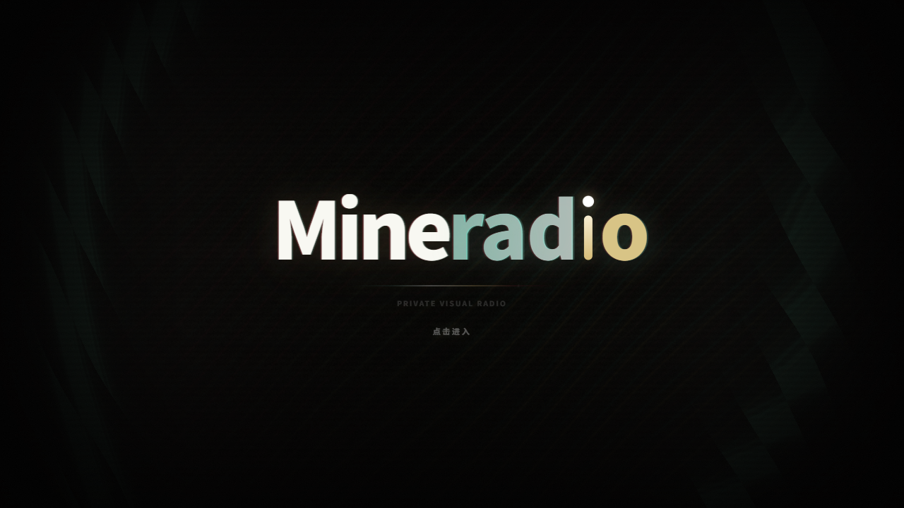

让歌词成为舞台
跟随播放进度的歌词，配合粒子与电影镜头视觉，让熟悉的旋律多一种表达。
为 MAC 而来 · 开源社区衍生版
给耳朵一首歌，给眼睛一个世界。
让歌词、粒子与节奏，在你的 Mac 上相遇。
v2.2.0 社区预览 · Apple Silicon · macOS 12+
THE LISTENING ROOM
从一首本地音乐开始，
把日常播放，变成属于自己的小小现场。

跟随播放进度的歌词，配合粒子与电影镜头视觉，让熟悉的旋律多一种表达。
导入本地音频，整理歌单和队列。支持本地歌词，把喜欢的歌留在自己的音乐库。
原生窗口按钮、⌘ 快捷键与应用菜单。支持桌面歌词；更多窗口行为正在持续验证。
A LITTLE LESS NOISE. A LITTLE MORE MUSIC.
关掉世界的杂音。
打开自己的频率。
ONE IDEA, MORE SCREENS
从最新上游与 Mac 适配源码出发，
为 Apple Silicon 提供独立安装包。
更适合触摸的音乐舞台，
是我们接下来探索的方向。
让自己的频率随身而行。
移动端目前尚未开始适配。
YOUR NEXT LISTEN STARTS HERE
下载 Mac 社区预览版，
从你的第一首本地音乐开始。
当前安装包使用 Developer ID 正式签名，尚未完成 Apple 公证，首次打开可能被 macOS 拦截。窗口最小化检查仍有未通过项，在线平台登录尚未验收。适合愿意体验和反馈的用户。
反馈体验问题 ↗THREE SMALL STEPS
打开 → 关于本机。如果显示 Apple M 系列芯片，即可使用当前安装包。Intel 版暂未提供。
下载后打开磁盘映像，将 Mineradio 拖到 Applications 文件夹。
GOOD TO KNOW
不是。这是由 swording-k 维护的独立社区衍生版，基于 XxHuberrr 的 Mineradio 最新公开主线与其发布的 macOS 适配源码。原项目、Mac 适配与第三方贡献均保留来源和署名。
当前社区预览版免费下载，源码按 GPL-3.0-only 提供。你可以阅读、修改和再分发，遵守对应许可证要求；品牌和第三方资源仍遵循各自声明。
可以先导入本地音频体验。第三方音乐平台的登录、内容可用性和会员权益取决于相应平台与个人账号；当前预览包尚未完成在线平台登录和会员播放验收。
当前只提供 Apple Silicon Mac 社区预览包。iPad 与 iPhone 仍在规划中，Intel 社区包也尚未提供，没有承诺发布日期。进展会在项目仓库更新。
BUILT IN THE OPEN
保留来处，也继续向前。欢迎带着想法、代码或使用反馈加入。